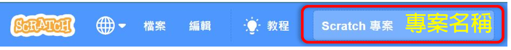

|
|
|---|
 專 案
專 案
「專案」或可稱為「項目」、「作品」，就是指使用Scratch程式所創建出來的作品。它可以採用任何形式，比如六種主要類型之一：遊戲、動畫、模擬、音樂、藝術或故事，或是其他，如教程、幻燈片...等，其中最常見到的就是遊戲和動畫。
而在進行「專案」的這項行為，就被稱為「編程」。
「專案」是從程式編輯器中創建的，專案的名稱會顯示在編輯器上方工具列的文本框中，可以直接編輯。

一個Scratch「專案」（Project），通常由舞台（Stage）、角色（Sprite）、腳本（Script）和聲音（Sound）等基本要素構成，它就像是在劇場的舞台上表演⼀出話劇（專案），演員（角色） 們按照劇本（腳本）的描述在舞台上進行各種表演（運動、對話、改變外觀等）。